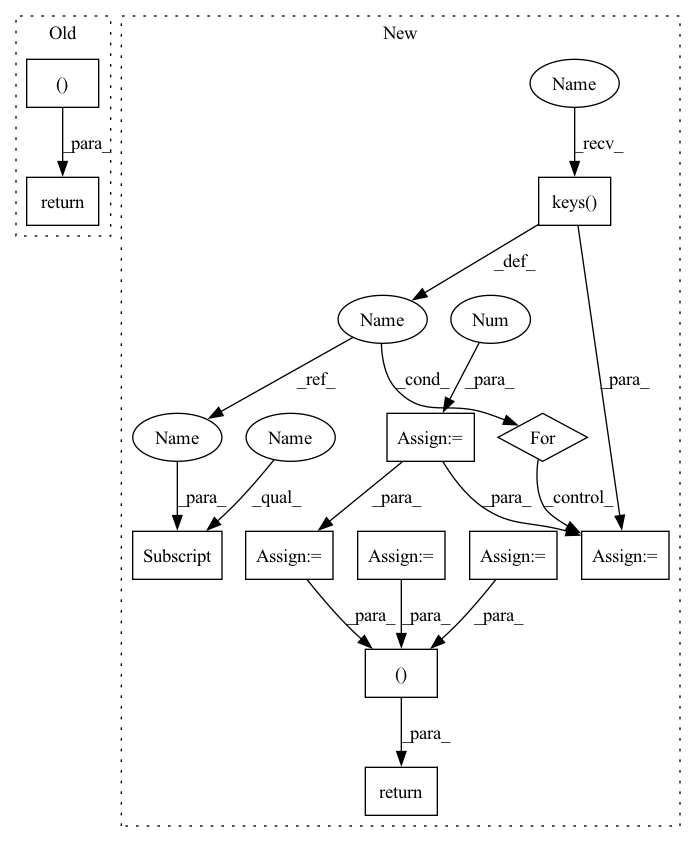

Pattern ID :21158
Before Change
rec = overall.rec
f1 = overall.fscore
return (acc, pre, rec, f1 )
After Change
rec = overall.rec
f1 = overall.fscore
type_macro_pre = 0.0
type_macro_rec = 0.0
type_macro_f1 = 0.0
for k in by_type.keys():
type_macro_pre += by_type[k].prec
type_macro_rec += by_type[k].rec
type_macro_f1 += by_type[k] .fscore
type_macro_pre = type_macro_pre / float(len(by_type))
type_macro_rec = type_macro_rec / float(len(by_type))
type_macro_f1 = type_macro_f1 / float(len(by_type))
return (acc, pre, rec, f1, type_macro_pre, type_macro_rec, type_macro_f1 )
In pattern: SUPERPATTERN
Frequency: 3
Non-data size: 12
Instances Fragment ID: 67819882
Project Name: indobenchmark/indonlu
Commit Name: 41d6e7af9f11b78b4781fc1eaf78112dfff23b8f
Time: 2020-10-08
Author: scahyawijaya@connect.ust.hk
File Name: utils/conlleval.py
M Class Name: AnonimousClass
N Class Name: AnonimousClass
M Method Name: conll_evaluation(2)
N Method Name: conll_evaluation(2)
M Parent Class:
N Parent Class:
M File Name: utils/conlleval.py
N File Name: utils/conlleval.py
M Start Line: 186
M End Line: 191
N Start Line: 186
N End Line: 203
Before Change
def step(self, action_dict):
o, r, d, i = self.env.step(action_dict)
dones = {"__all__": d["__all__"]}
return o, r, dones, i
def close(self):
self.env.close()
After Change
def step(self, action_dict):
o, r, d, info = self.env.step(action_dict)
// cooperative need global reward (specific to football)
reward = 0
for key in r.keys():
reward += r[key]
rewards = {}
obs = {}
for key in action_dict.keys():
rewards[key] = reward
obs[key] = {
"obs": o[key]
}
dones = {"__all__": d["__all__"]}
return obs, rewards, dones, info
def close(self):
self.env.close()
Fragment ID: 67819914
Project Name: replicable-marl/marllib
Commit Name: a188e8bae949ab83cdb20e90eeadc6156b1c1471
Time: 2022-04-26
Author: hhhusiyi@163.com
File Name: IL/envs/mpe_rllib.py
M Class Name: RllibMPE
N Class Name: RllibMPE
M Method Name: step(2)
N Method Name: step(2)
M Parent Class: MultiAgentEnv
N Parent Class: MultiAgentEnv
M File Name: IL/envs/mpe_rllib.py
N File Name: IL/envs/mpe_rllib.py
M Start Line: 51
M End Line: 52
N Start Line: 55
N End Line: 66
Before Change
rec = overall.rec
f1 = overall.fscore
return (acc, pre, rec, f1 )
After Change
f1 = overall.fscore
type_macro_pre = 0.0
type_macro_rec = 0.0
type_macro_f1 = 0.0
for k in by_type.keys():
type_macro_pre += by_type[k].prec
type_macro_rec += by_type[k] .rec
type_macro_f1 += by_type[k].fscore
type_macro_pre = type_macro_pre / float(len(by_type))
type_macro_rec = type_macro_rec / float(len(by_type))
type_macro_f1 = type_macro_f1 / float(len(by_type))
return (acc, pre, rec, f1, type_macro_pre, type_macro_rec, type_macro_f1 )
Fragment ID: 67819883
Project Name: indonlp/indonlu
Commit Name: 41d6e7af9f11b78b4781fc1eaf78112dfff23b8f
Time: 2020-10-08
Author: scahyawijaya@connect.ust.hk
File Name: utils/conlleval.py
M Class Name: AnonimousClass
N Class Name: AnonimousClass
M Method Name: conll_evaluation(2)
N Method Name: conll_evaluation(2)
M Parent Class:
N Parent Class:
M File Name: utils/conlleval.py
N File Name: utils/conlleval.py
M Start Line: 186
M End Line: 191
N Start Line: 186
N End Line: 203